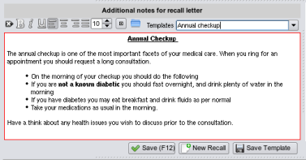

Templates
In the recall section a template refers to text to include in the letter or email, that the patient will be sent for the recall.
When you first select a recall, EasyGP attempts to find a match between the recall name and a template name, and if it finds one
will automatically fill in the additional text window.
If there is not existing text, then you could select text from an existing template from the template combo
The template will then be displayed. You can use this text, or modify it to create a new template.
